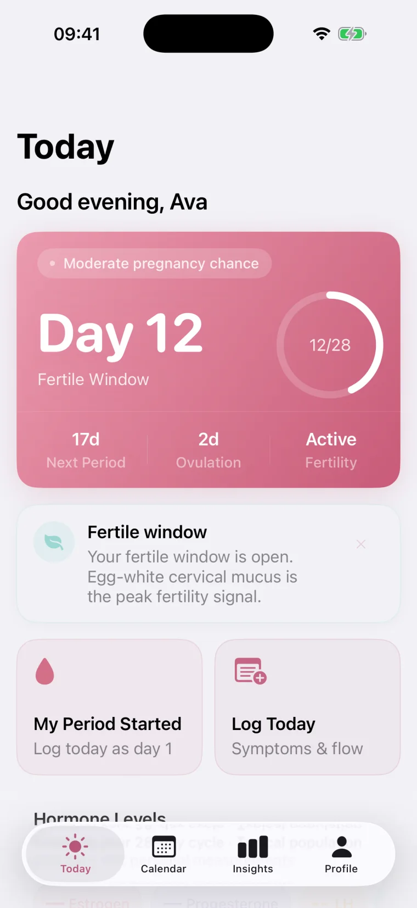
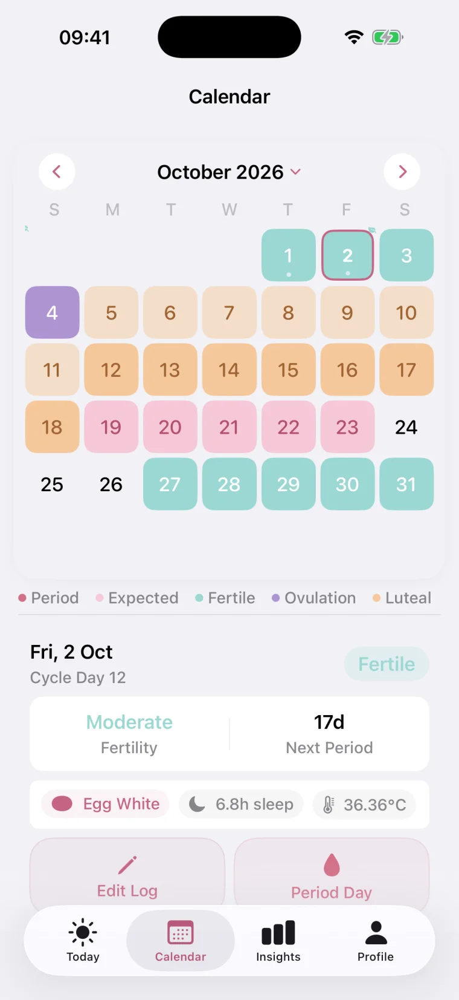
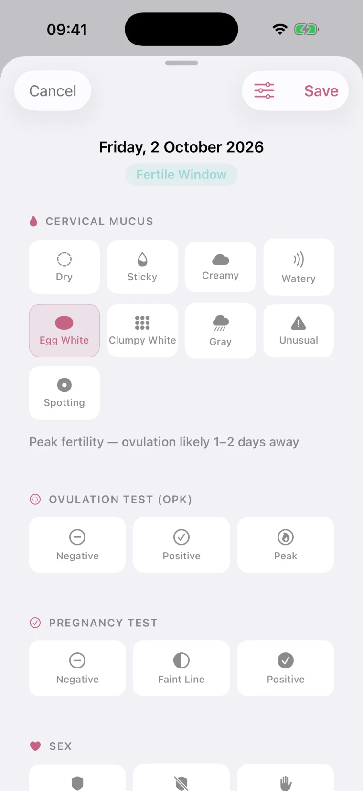
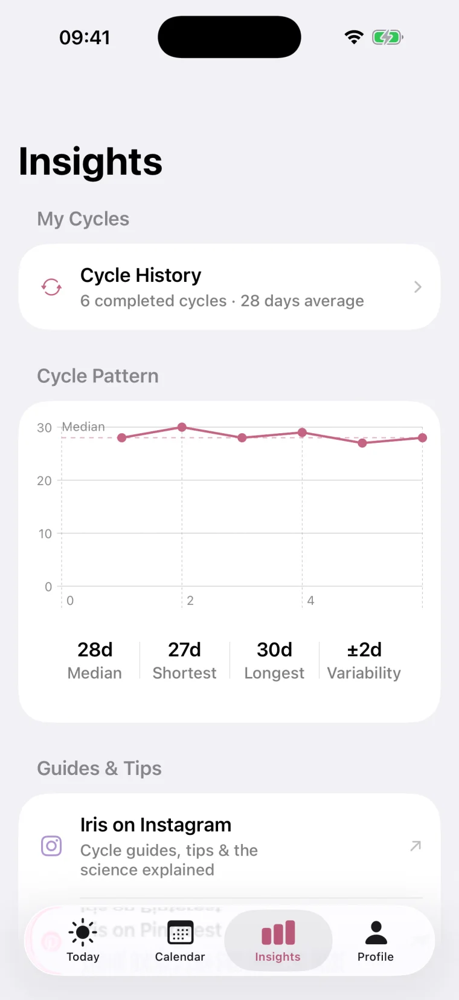

A period tracker that stays on your phone
Iris predicts your period and fertile days from your own cycles, copes with irregular ones, and works without an account. Every feature is free.
Predictions from your cycles, not a textbook average
Iris starts with the dates you give it and gets sharper every time you log a period. It estimates when you ovulate and counts your next period forward from there.
So when ovulation comes late, the forecast moves with it instead of insisting you are late.
See ovulation in your own data
Log LH test strips and your morning temperature. A positive LH test marks ovulation on your calendar and resets the countdown to your next period.
Temperatures are charted against a coverline, so the rise after ovulation is easy to spot.
Honest about cycles that don't keep time
If your cycles swing by a week or more, or you have PCOS, a single date would just be a guess. Iris looks at your history and gives you the window your period is likely to fall in.
If it runs past that window, Iris tells you plainly and waits for you to log.
Your cycle on your Home Screen
See your cycle day, your phase and the days until your next period without opening the app. The medium widget adds your week ahead in calendar colours.
Add one to your Lock Screen too. They move to the next day on their own at midnight.
Let someone you trust follow along
Send your partner a code. In Iris they see your phase, cycle day and predictions, a short tip on how to help, and a heads-up the day before your period.
It's view only and end-to-end encrypted. Mood and symptoms stay private unless you choose to share them, and you can stop sharing whenever you like.
Works with Apple Health
Iris syncs with Apple Health in both directions, so your history isn't locked inside one app and nothing has to be entered twice.
Reminders that know where you are in your cycle
A heads-up before your period, your fertile window and your PMS week, plus pill and medication reminders at the time you pick. Turn each one on or off.
Trying for a baby, on the pill, or just keeping track
Iris changes how it works to fit where you are, and everything below comes with it.
Daily log
Flow, symptoms, mood, discharge, sleep, weight and notes. Hide what you don't track.
A mode for your goal
Just tracking, trying to conceive or avoiding pregnancy. Colours and wording change to fit.
Pregnancy and postpartum
Pause predictions while pregnant and pick back up when your cycle returns.
Hormonal contraception
On the pill or a hormonal IUD, Iris stops guessing at ovulation and tracks bleeding and pills instead.
A report for your doctor
Export a PDF of your cycles and symptoms to take to an appointment.
Hormones, explained
How estrogen, progesterone, LH and FSH change across your cycle, in plain words.
Inside the app




Where your data goes
Nowhere anyone else can see it. Iris keeps everything on your iPhone. Turn on sync and a copy goes to your own iCloud, which only you can open. There is no Iris server for it to go to.
- Sign upNot neededMany trackers want an email or account
- Your dataYour phone and your own iCloudMany keep it on their servers
- PriceFree, with a one-time option to remove adsMany put key features behind a subscription
- Partner sharingA private code, end-to-end encryptedMany route it through their account system
Questions
Something else? Ask on the support page.
Is Iris free?
Yes. Every feature is free. Iris shows a few ads to pay for itself, and a single one-time purchase removes them. There is no subscription.
Do I need an account?
No. There is no sign-up, email or login. You enter your last period date and start.
Where is my data stored?
On your iPhone. If you turn on sync, a copy goes to your own private iCloud so you can move to a new phone or use your iPad. Iris has no servers of its own.
Does Iris work with irregular cycles or PCOS?
Yes. When your cycles vary a lot, Iris shows a likely window based on your history instead of a single date, and tells you plainly when a period is later than that window.
How does Iris predict ovulation?
It estimates ovulation from your cycle history and counts your next period forward from it. If you log LH tests, a positive surge marks ovulation on the calendar and the period prediction moves to match. Basal temperatures are charted with a coverline.
Can I use Iris as birth control?
No. Iris is not a contraceptive and its predictions are estimates. The avoiding pregnancy mode highlights the days with a higher chance of pregnancy, but it never tells you a day is safe.
Does Iris have widgets?
Yes. There are Home Screen widgets in two sizes and Lock Screen widgets showing your cycle day, phase and the days until your next period. They move to the next day on their own.
Can my partner see my cycle?
Only if you share a code with them. They see your phase, cycle day and predictions in Iris, view only and end-to-end encrypted, and you can stop sharing at any time.
Does Iris work with Apple Health?
Yes. Iris syncs period flow, basal body temperature, ovulation tests, cervical mucus, weight and sleep with Apple Health.
Which languages does Iris support?
English, German, Spanish, Filipino, Indonesian, Japanese, Polish, Portuguese, Russian and Thai.
Set up takes about a minute
All Iris needs to start is the date your last period began.